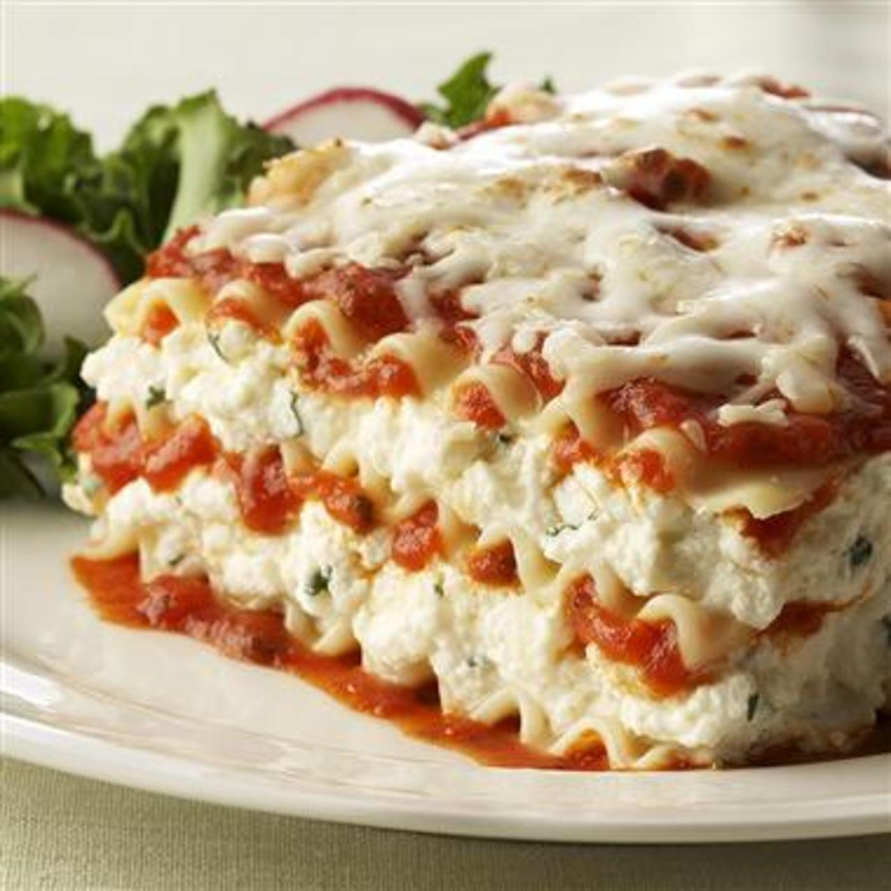

lasagna

Description
Making a classic Lasagna, to remind you of your Mom's home cooked dinners.
The Lasagna meal feeds approximately 12 servings, with a total time to make
from preparations to eating of 3.15 hrs
How to Make Lasagna Step-By-Step
- Make the meat Sauce
- Cook the noodles
- Make the ricotta mixture
- Layer the lasagna according to teh recipe instructions
- cover with foil and bake
- Let the lasagna rest before serving.